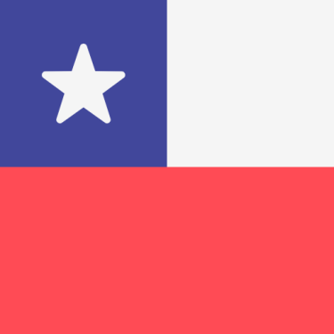
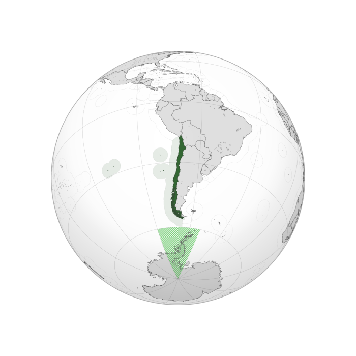

Chile Flag
After Europe hosted two consecutive World Cups, the American federations demanded the 1962 edition must be held in South America or they would stage a complete boycott of the tournament, similar to 1938. Argentina, after previously failed candidacies, was the favourite. Magallanes' chairman, Ernesto Alvear, attended a FIFA Congress held in Helsinki while the Finnish city was hosting the 1952 Summer Olympics. He considered that Chile was able to organise the World Cup. Several sources also say that FIFA did not want Argentina to run alone, requesting the participation of Chile as almost symbolic. Chile registered its candidacy in 1954 alongside Argentina and West Germany, the latter withdrawing at the request of FIFA.

Chile Location
Chile's football federation committee, led by Carlos Dittborn and Juan Pinto Durán, toured many countries convincing various football associations about the country's ability to organise the tournament in comparison to Argentina's superior sports infrastructure and prestige. The FIFA Congress met in Lisbon, Portugal on 10 June 1956. That day, Raul Colombo, representing Argentina's candidacy, ended his speech with the phrase "We can start the World Cup tomorrow. We have it all." The next day, Dittborn presented four arguments that supported Chile's candidacy: Chile's continued participations at FIFA-organised conferences and tournaments, sports climate, tolerance of race and creed and political and institutional stability of the country. In addition, Dittborn invoked Article 2 of the FIFA statutes that addressed the tournament's role in promoting the sport in countries deemed "underdeveloped". In a counter-point to Colombo's claim that "We have it all" Dittborn coined the phrase "Because we have nothing, we want to do it all" (Spanish: Porque no tenemos nada, queremos hacerlo todo) around the fifteenth minute of his speech. Chile won 32 votes to Argentina's 10. Fourteen members abstained from voting.